2016年北京市中考物理试题 原卷解析
2016年北京市中考物理试卷
参考答案与试题解析
一、选择题（下列各小题均有四个选项，其中只有一个选项符合题意。共30分，每小题2分）
1．【分析】首先对选项中的单位进行分析，明确各自对应的物理量，然后确定符合题意的选项。
【解答】解：在国际单位制中，
A、安培是电流的主单位。符合题意；
B、伏特是电压的主单位。不符合题意；
C、焦耳是功的主单位。不符合题意；
D、瓦特是电功率的主单位。不符合题意。
故选：A。
【点评】此题考查的是我们对常见物理量及其对应单位的掌握，属于识记性知识，难度较小，容易解答。
2．【分析】根据常见的导体和绝缘体进行判断。
常见的导体包括：人体、大地、各种金属、酸碱盐的溶液等。
常见的绝缘体包括：塑料、陶瓷、橡胶、空气、玻璃等。
【解答】解：A、陶瓷盘是制品陶瓷，是绝缘体。不符合题意。
B、不锈钢锅是金属制品，是导体。符合题意。
C、玻璃杯是玻璃制品，是绝缘体。不符合题意。
D、木铲是木制品，是绝缘体。不符合题意。
故选：B。
【点评】本题属于应会水平的区分识别类基础题，本题从学生生活中最常见的厨房用具入手，密切联系学生的生活实际，生活气息浓郁。
3．【分析】（1）光在同种、均匀、透明介质中沿直线传播，产生的现象有小孔成像、激光准直、影子的形成、日食和月食等；
（2）光线传播到两种介质的表面上时会发生光的反射现象，例如水面上出现岸上物体的倒影、平面镜成像、玻璃等光滑物体反光都是光的反射形成的；
（3）光线在同种不均匀介质中传播或者从一种介质斜射入另一种介质时，就会出现光的折射现象，例如水池底变浅、水中筷子变弯、海市蜃楼等都是光的折射形成的。
【解答】解：A、赵州桥在水中形成“倒影”，是水面成像，属于光的反射现象；
B、手在墙上形成“手影”，是光的直线传播形成的；
C、筷子好像在水面处向上弯折，属于光的折射现象；
D、景物在凸面镜中成像扩大视野，是凸面镜成像，属于光的反射现象。
故选：C。
【点评】本题通过几个日常生活中的现象考查了对光的折射、光的直线传播、光的反射的理解，其中A选项中的赵州桥是我国古代传统桥梁建筑的杰作，即考查了光学知识，又弘扬了中华民族的传统文化。B选项体现了“玩中学”、“做中学”的理念。
4．【分析】当电流通过电阻时，电流做功而消耗电能，产生了热量，这种现象叫做电流的热效应。
【解答】解：
A、计算器工作时主要把电能转化为光能与声能，不是利用电流热效应工作的，故A不合题意；
B、电风扇主要是把电能转化为机械能，不是利用了电流的磁效应，故B不合题意；
C、电暖气将电能转化为内能，利用了电流的热效应，故C符合题意；
D、电视机工作时注意把电能转化为光能与声能，不是利用电流热效应工作的，故D不合题意。
故选：C。
【点评】主要考查电流的热效应在生活中的应用实例，只有认真把握它的定义，才能真正区分它们。体现了物理来源于生活，又服务于社会的理念。
5．【分析】（1）增大摩擦力的方法：在接触面粗糙程度一定时，通过增大压力来增大摩擦力；在压力一定时，通过增大接触面的粗糙程度来增大摩擦力。
（2）减小摩擦力的方法：在接触面粗糙程度一定时，通过减小压力来减小摩擦力；在压力一定时，通过减小接触面的粗糙程度来减小摩擦力；使接触面脱离；用滚动摩擦代替滑动摩擦。
【解答】解：
A、机械表保养时上油，是通过使接触面分离来减小摩擦力；故A符合题意；
B、防滑垫表面做得凹凸不平，是在压力一定时，通过增大接触面的粗糙程度来增大摩擦力。故B不合题意；
C、旋钮侧面制有条纹，是在压力一定时，通过增大接触面的粗糙程度来增大摩擦力。故C不合题意；
D、轮胎上制有花纹，在压力一定时，通过增大接触面的粗糙程度来增大摩擦力。故D不合题意。
故选：A。
【点评】本题属于应知应会水平的区分识别类基础题。用摩擦的知识解释生活中的一些现象，使学生学以致用，充分体现了从生活走向物理，从物理走向社会的理念。
6．【分析】判断杠杆在使用过程中，动力臂和阻力臂的大小关系，再判断它是属于哪种类型的杠杆。
【解答】解：A、天平的动力臂等于阻力臂，属于等臂杠杆，故A错误；
B、瓶起子的动力臂大于阻力臂，属于省力杠杆，故B错误；
C、食品夹的动力臂小于阻力臂，属于费力杠杆，故C正确；
D、钳子的动力臂大于阻力臂，属于省力杠杆，故D错误。
故选：C。
【点评】此题考查的是杠杆的分类主要包括以下几种：①省力杠杆，动力臂大于阻力臂；②费力杠杆，动力臂小于阻力臂；③等臂杠杆，动力臂等于阻力臂。
7．【分析】（1）增大压强的方法：在压力一定时，减小受力面积来增大压强；在受力面积一定时，增大压力来增大压强。
（2）减小压强的方法：在压力一定时，增大受力面积来减小压强；在受力面积一定时，减小压力来减小压强。
【解答】解：
A、铁轨铺在枕木上，是在压力一定时，增大受力面积减小对路基的压强，保护路基。不符合题意。
B、大型载重车装有很多车轮，是在压力一定时，增大受力面积减小汽车对地面的压强，不符合题意。
C、书包带较宽，是在压力一定时，增大受力面积减小书包对肩膀的压强，背书包时舒服些。不符合题意。
D、切熟鸡蛋的钢丝很细，是在压力一定时，减小受力面积来增大压强。符合题意。
故选：D。
【点评】用压强知识解释相关现象，注意理论联系生活实际，其中，书包是学生接触最多的物品，体验深刻，使本题有亲切感。要做好这个题，还需要学生有初步的控制变量、对比能力。本题属于传统的基础题。
8．【分析】知道改变物体内能的方式有两种：做功和热传递，热传递过程是能量的转移过程，而做功过程是能量的转化过程。
【解答】解：
A、热水倒入茶杯，茶杯从热水中吸收热量，温度升高，是热传递改变了物体的内能，不符合题意；
B、冰冻食物放在水中解冻，食物从水中吸收热量，水温降低，水变凉，是热传递改变了物体的内能，不符合题意；
C、刚煮熟的鸡蛋放在冷水中，水从鸡蛋吸收热量，温度降低，是通过热传递改变物体的内能，不符合题意；
D、寒冷的冬天，双手互搓，手克服摩擦做功，温度升高，属于做功改变物体的内能，符合题意。
故选：D。
【点评】此题是考查对做功和热传递改变物体内能的辨别，是中考热点，属于易错题目。
9．【分析】根据安全用电的常识分析：
（1）更换灯泡、搬动电器时不要带电操作，要切断电源；
（2）不要在电线上晾衣物，不在高压线附近放风筝；
（3）导线的绝缘皮要保持完好无损，否则易引起触电事故；
（4）不用湿手触摸开关，不用湿布擦拭正在使用的用电器。
【解答】解：
A、更换灯泡、搬动电器时容易碰到金属部分，切断电源可以保证金属部分不带电，符合安全用电原则；
B、高压线的电压很高，在其旁边放风筝，风筝容易挂到高压线上，很有可能会发生导电，使得放风筝的人触电，不符合安全用电原则；
C、使用绝缘皮破损的导线，易引发触电事故，不符合安全用电原则；
D、水是电的导体，用湿抹布擦带电的用电器时，可能会因湿抹布导电而发生触电事故，不符合安全用电原则。
故选：A。
【点评】本题是既是用电常识，又属于学生必须掌握的基础知识。这个题的考查对象我认为不仅仅是初中学生。每个人都应该有安全用电的意识和方法。本题联系生活实际，对学生进行安全教育。体现了“安全无小事，事事有教育”。
10．【分析】解答此题要知道物体由固态变为液态的过程叫熔化；根据物态变化的知识逐一分析即可。
【解答】解：A、冰化成水是由固态变成液态的过程，是熔化现象，符合题意；
B、露是空气中的水蒸气遇冷液化形成的小水滴，不符合题意；
C、雾是空气中的水蒸气遇冷液化形成的小水滴，不符合题意；
D、雪是空气中的水蒸气直接凝华形成的小冰晶，是凝华。不合题意。
故选：A。
【点评】此题考查学生关于物态变化的理解和掌握，把握好物质的初状态和末状态是解题的关键。
11．【分析】重力的方向是竖直向下的。重垂线是利用重物静止时线总是竖直下垂的原理制造的仪器。
【解答】解：根据重力方向竖直向下，如果画框和重垂线是平行的，画框是竖直的，否则画框不竖直。所以为了把年画贴正，应调整年画，使年画的长边与重垂线平行。
故选：C。
【点评】本题用挂年画的方式考查学生重力方向的相关知识，非常新颖，是一道好题。
12．【分析】做功的两个必要因素：一是作用在物体上的力，二是在力的方向上移动的距离，据此判断重力、支持力、推力是否做功。
【解答】解：
A、由题知，购物车在水平地面上运动，在重力的方向上（竖直向下）购物车没有移动距离，所以重力不做功，故A错；
B、由题知，购物车在水平地面上运动，在支持力的方向上（竖直向上）购物车没有移动距离，所以支持力不做功，故B错；
CD、购物车在水平推力的方向上移动了距离，所以推力对购物车做了功，故C正确、D错。
故选：C。
【点评】明确三种情况不做功：一是有力无距离（例如：推而未动），二是有距离无力（靠惯性运动），三是力的方向与运动方向垂直。
13．【分析】由电路图可知，R1与R2串联，电压表测R1两端的电压，电流表测电路中的电流，根据滑片的移动可知接入电路中电阻的变化，进一步可知电路中总电阻的变化，根据欧姆定律可知电路中电流的变化和R1两端的电压变化。
【解答】解：由电路图可知，R1与R2串联，电压表测R1两端的电压，电流表测电路中的电流，
将滑动变阻器的滑片P向右滑动，变阻器接入电路中电阻丝的长度变长，接入电路中的电阻变大，故D错误；
因串联电路中总电阻等于各分电阻之和，
所以，电路中的总电阻变大，故A错误；
由I＝可知，电路中的电流变小，即电流表的示数变小，故B正确；
由U＝IR可知，R1两端的电压变小，即电压表的示数变小，故C错误。
故选：B。
【点评】本题考查了电路的动态分析，涉及到滑动变阻器和欧姆定律的应用，是一道较为简单的应用题。
14．【分析】此题考查对生活中常见物体长度的估测，结合对生活的了解和对长度单位及其进率的认识，找出符合生活实际的答案。
【解答】解：由图知，国旗的宽度大约是升旗手身高的2倍，升旗手的身高一般在1.8m左右，所以国旗宽度在3.3m左右。
故选：B。
【点评】长度的估测，必须熟悉一些常见物体的长度，以此为标准对研究对象作出判断。如：中学生拳头的宽度在10cm左右；中学生伸开手掌，大拇指指尖到中指指尖的距离大约18cm；成年人的身高在170cm左右，一步的步幅在75cm左右；一层楼的高度在3m左右，等等。
15．【分析】（1）影响动能的影响因素是物体的质量和物体运动的速度；
（2）物体受到非平衡力的作用时，其运动状态一定改变；
（3）物体保持原来运动状态不变的性质叫惯性，一切物体都有惯性，惯性是物体的一种属性；
（4）相互作用力的条件：大小相等、方向相反、作用在两个物体上，作用在同一条直线上。
【解答】解：A、跳伞运动员匀速下落的过程中，质量不变、速度不变，动能不变，故A错误；
B、投出去的实心球在空中运动过程中，受到非平衡力的作用，运动状态不断改变。故B错误；
C、跳远运动员起跳后能继续向前运动，是由于运动员具有惯性，仍然要保持原来的运动状态。故C正确；
D、跳高运动员起跳蹬地时，运动员对地的压力与地对运动员的支持力是一对相互作用力，大小相等。故D错误。
故选：C。
【点评】本题改变了单选题中对单一知识点考查的模式，各选项选择了不同的考查内容，增加了试题对知识的覆盖。将考查的知识点融于实际情景中。让学生用所学的知识解释生活现象，学以致用。
二、多项选择题（下列各小题均有四个选项，其中符合题意的选项均多于一个。共8分，每小题2分。每小题选项全选对的得2分，选对但不全的得1分，有错选的不得分）
16．【分析】①比热容是物质的一种特性，同种物质状态不变时比热容一定，与质量、热量和温度变化无关；
②晶体熔化过程中吸收热量，内能增加，但温度保持不变；
③物质由分子或原子组成，分子之间同时存在相互作用的引力和斥力；
④不同物质的分子相互接触时，彼此进入对方的现象叫扩散。
【解答】解：A、一杯水和一桶水比较，质量不同、体积不同，但都是水，物质种类、状态相同，所以比热容相同，故A错误；
B、晶体有固定的熔化温度，叫熔点。在熔化过程中晶体虽然吸收热量，但温度保持不变。此选项正确；
C、物质分子之间同时存在引力和斥力。此选项错误；
D、组成物质的分子（原子）时刻的运动的，长时间压在一起的铅板和金板分子可以互相渗入对方，这种现象叫扩散现象。此选项正确。
故选：BD。
【点评】本题所选择的现象都和生活实际相联系，试题注意引导学生利用所学知识分析解释生活中的现象，达到学以致用的目的。是多项选择题中学生很容易辨析对、错的题。
17．【分析】（1）浸在液体和气体中的物体都要受到浮力的作用；
（1）地球是一个大磁体，周围存在磁场，叫做地磁场，地磁场对放入其中的小磁针产生磁力的作用；
（3）上端开口，底部相互连通的容器是连通器；
（4）声音是由于物体的振动产生的。
【解答】解：
A、孔明灯在上升过程中，不但受到重力而且受到浮力的作用，故A错误；
B、地磁场能对地球附近的磁体产生磁力，所以司南能够指南北是受地磁场的作用，故B正确；
C、茶壶的壶嘴和壶身上端开口，底部相互连通，是利用连通器的原理，故C正确；
D、正在发声的物体都在振动，所以发声的编钟一定在振动，故D正确。
故选：BCD。
【点评】本题考查了浮力、地磁场、连通器的应用，以及声音的产生，属于综合性题目。
18．【分析】利用下列知识分析判断：
（1）电动机是利用通电导体在磁场中受力的原理制成的；
（2）滑动变阻器通过改变连入电路的电阻丝的长度改变连入电路的电阻，进而改变电路中的电流；
（3）磁悬浮列车主要是依据磁极间的相互作用来实现悬浮和运行的；
（4）验电器工作原理：同种电荷相互排斥。
【解答】解：
A、①图说明通电导体在磁场中受力，电动机就是根据这个原理制成的，故A正确；
B、②图通过改变连入电路的电阻丝的长度改变连入电路的电阻，进而改变电路中的电流，这也是滑动变阻器的变阻原理，故B正确；
C、③图说明同种电荷相互排斥，而磁悬浮列车是依据磁极间的相互作用来实现悬浮和运行的，故C错；
D、④图说明同名磁极相互排斥，而验电器的工作原理是同种电荷相互排斥，故D错。
故选：AB。
【点评】本题主要考查学生对知识的理解和运用情况。试题所选择的素材主要涉及的是电和磁的相关知识。题目以两组图片相对应的形式展现给学生，一组是实验现象，另一组是现象的应用，考查了我们的教学过程中实验的展现，同时也是为了把学生的课堂表现考出来。试题形式新颖、设计巧妙，体现了学以致用的思想。
19．【分析】（1）影响动能的影响因素是物体的质量和物体运动的速度；
（2）影响重力势能的因素是物体的质量和物体的高度；
（3）根据W＝Gh判断出做功的多少；
（4）根据P＝ 判断出功率的大小。
判断出功率的大小。
【解答】解：
A、小球从A点由静止开始下落，质量不变，速度越来越大，动能不断变大。故A错误；
B、小球的质量不变，C点的高度小于在B点的高度，故小球在C点的重力势能小于在B点的重力势能。故B正确；
C、已知AB和BC的距离相等，根据W＝Gh可知，重力一定，通过的距离相同，所以重力做的功相同。故C正确；
D、由题意知，小球在AB段的平均速度小于在BC段的平均速度，AB和BC的距离相等，所以在BC段所用的时间小于在AB段所用时间，根据P＝可知，重力做功相同的情况下，BC段的时间短，所以BC段做功的功率大，故D正确。
故选：BCD。
【点评】本题是一道力学综合试题，主要考查对学生对基本概念的理解和运用，重点考查学生分析、解决问题的能力。和以往试题相比，情景简单新颖，引导我们教学要重视对基本概念的教学，并对概念要进行变式训练。
三、实验与探究题（共48分，20～25、28～32题各2分，26、27、33～36题各3分，37、38题各4分）
20．【分析】此题温度计的示数在量程的范围内，且分度值为1℃，可根据这两点读出此温度计的示数。
【解答】解：由图知：温度计的最小刻度值是1℃，液面在零刻度以上，因此该温度计的示数是30℃+9℃＝39℃；
故答案为：39。
【点评】本题意在考查考生的基本实验技能﹣﹣是否认真观察生活中常见的温度计，是否了解它们的使用方法和读数方法。属于基本技能考查试题。
21．【分析】弹簧测力计测量力的大小时，明确每一个大格和每一个小格代表的示数。
【解答】解：弹簧测力计每一个大格是1N，每一个小格是0.2N．一定要从数值小的往数值大的顺序读，力的大小为4N。
故答案为：4。
【点评】弹簧测力计是实验室的基本测量器材，本题意在考查考生的基本实验技能﹣﹣用弹簧测力计测量力的大小，测力计的正确读数。属于基础技能考查试题。
22．【分析】天平的测量结果＝砝码的总质量+游码的示数。注意游码应读其左侧的刻度。
【解答】解：该天平的分度是0.2g，砝码总质量等于50g+20g＝70g，游码示数为2g。
所以物体质量m＝70g+2g＝72g。
故答案为：72。
【点评】本题的在于考查考生的基本实验技能﹣﹣用天平测量物体质量的基本使用要求，读数方法。属于基础技能考查试题。
23．【分析】电阻箱的读数方法：用“△”所对的数字乘以下面的倍数，然后把他们相加即可。
【解答】解：×1000的位置对应的数是0，×100的位置对应的数是0，×10的位置对应的数是5，×1的位置对应的数是0，故是50Ω。
故答案为：50。
【点评】在计算电阻箱的读数时不要忘记乘以各指针所对应的倍数。
24．【分析】力臂是从支点到力的作用线的距离，由支点向力的作用线作垂线，垂线段的长度即为力臂。
【解答】解：
由图可知，AB是力F的作用线，OA⊥AB，OA为支点到力F的作用线的距离，所以线段OA表示力F的力臂。
故答案为：OA。
【点评】本题考查了杠杆的相关知识，考生需要根据力臂的定义在图中识别出已知力F的力臂。引导教学要注重基本概念的理解和落实。
25．【分析】光的反射定律的内容：反射光线与入射光线、法线在同一平面上；反射光线和入射光线分居在法线的两侧；反射角等于入射角。据此结合图片进行分析。
【解答】解：根据反射定律可知，反射角等于入射角，因为入射角AON等于60°，所以反射角也等于60°，
已知，∠NOD等于60°，则反射角是∠NOD，所以反射光线将沿OD射出。
故答案为：OD。
【点评】本题的设计在于考查考生是否掌握了光的反射定律，尤其是反射角等于入射角这个知识点，题目考查方法灵活，引导我们今后在教学中进一步关注基本概念、基本规律的理解、运用和落实。
26．【分析】首先确定刻度尺的分度值，然后读出水滴由A位置下落到C位置运动的距离；
已知时间和路程，利用v＝计算平均速度；
物体在相等的时间内通过的路程都相等，物体做匀速运动；物体在相等的时间内通过的路程不相等，物体做变速运动。
【解答】解：由图可知，刻度尺的分度值为1cm，则水滴由A位置下落到C位置运动的距离为s＝20.0cm＝0.2m；
则这个过程中水滴下落的平均速度是v＝＝
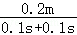
＝1m/s；水滴通过AB和BC所用时间相等，路程不相等，所以该水滴下落过程是变速直线运动。
故答案为：20.0；1；变速直线。
【点评】“测量平均速度”实验是《课程标准》要求的必做实验之一。题目情景的设置，避开了频闪照片这一难点，使学生更容易关注测量平均速度的原理，是一道简单的基础题。
27．【分析】根据图乙与图丙所示确定电压表与电流表的量程与分度值，读出电压表与电流表示数，然后由欧姆定律求出电阻阻值。
【解答】解：由图乙可知，电压表量程是0～3V，分度值是0.1V，电压表示数是2V；
由图丙可知，电流表量程是0～0.6A，分度值是0.02A，电流表示数是0.5A；
由I＝可得，电阻的阻值Rx＝＝
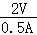
＝4Ω。故答案为：2；0.5；4。
【点评】本题考查了电表的读数、欧姆定律的应用，是一道基础题，对电表读数时，应先确定电表量程与分度值，然后再读数，读数时视线要与电表刻度线垂直。
28．【分析】蒸发是一种汽化现象，蒸发时需要吸热，有致冷作用。影响蒸发快慢的因素有液体的温度、液体的表面积、液体表面空气的流动速度。
【解答】解：读图可知，天气炎热，小阳去游泳，当他游泳上岸后，天气依然很热，但小阳却感觉很凉，一阵风吹过，他感到更凉了。据此我们可以提出的探究问题有：
①体表温度降低与皮肤表面上水的蒸发快慢有关吗？
②水蒸发的快慢与周围空气流动的速度有何关系？
故答案为：体表温度降低与皮肤表面上水的蒸发快慢有关吗？（合理即可）
【点评】本题考查考生在日常生活情景中提出可探究的科学问题的能力，本题的特点是基于学生日常生活经验，开放的情景和开放的解答。
29．【分析】此题较为开放，答案不唯一。此题要求我们能够根据小云同学的两次实验现象得出他所探究的问题，从小云同学的两次实验现象入手就是解答此题的关键。
【解答】解：
先用左手握住左侧的铁棒，右手握住右侧的铝棒，发现检流计指针发生了偏转；然后，左手仍握住左侧的铁棒，右手握住右侧的铜棒，发现检流计指针偏转方向与第一次偏转方向相反。由这个实验现象我们不难看出：当手握不同的金属棒时，检流计的指针发生了不同方向的偏转。
故答案为：手握金属棒产生的电流的方向是否与金属棒的材质有关。
【点评】这是一道导向性很强的题目。考查的是实验探究能力，要求考生会根据题目提供的实验操作步骤，提出所探究的问题。这就要求我们教师注意引导学生在课堂上、科技馆观察实验操作时，应该有意识的思考所研究的问题是什么。学生的问题意识是提出问题能力的一个重要基础。对于探究实验目的和实验操作步骤的一致性，在后续的教学中，我们要加以重视。
30．【分析】这是个实验题，根据复杂的数据表中利用数学的归纳知识，找到相关的数学解析式。
【解答】解：
①当t＝55℃，T＝48℃时，符合的数学关系式：0.8×55℃+4℃＝48℃；
②当t＝60℃，T＝52℃时，符合的数学关系式：0.8×60℃+4℃＝52℃；
③当t＝65℃，T＝56℃时，符合的数学关系式：0.8×65℃+4℃＝56℃；
余下的组数据也具有这样的特点，因此温度T与温度t的关系：T＝0.8t+4℃。
故答案为：0.8t+4℃。
【点评】依据实验数据得出结论，是科学探究过程中的一个重要环节。本题利用实验数据分析得出的关系式为简单的一次函数，此类题考查多年，学生练习比较多，是学生较为熟悉的题型。
31．【分析】（1）根据题中，每隔50s测量一次试管内水的温度并记录，依据实验数据绘制了图乙中的图象，确定K的物理意义。
（2）根据图乙中①铜棒，②铝棒温度变化情况确定导热性能。
【解答】解；（1）根据题中，每隔50s测量一次试管内水的温度并记录，依据实验数据绘制了图乙中的图象，观察图象横轴和纵轴可以确定K是用单位时间内温度变化量表示。
（2）根据图乙中①铜棒，②铝棒温度变化情况，发现相同时间铜棒升温快，说明铜棒导热性能好。
故答案为：（1）D；（2）铜棒。
【点评】本题是利用新情景考查学生科学探究能力，科学方法应用能力，此题需要学生对实验探究方法有深刻理解。
32．【分析】理解常见的物理研究方法，控制变量法就是控制其它因素不变，只让研究的量发生改变。
【解答】解：A、探究并联电路中电源两端电压与各支路两端电压的关系，通过多次实验的电压，总结出并联电压实验规律，与电流没有任何关系，故A错误。
B、探究电流通过导体产生的热量与导体电阻的关系，由于电流通过产生的热量与，电流大小，电阻大小，通电时间有关，研究与电阻的关系，需要控制电流大小、通电时间相同，故B正确。
C、探究串联电路中电源两端电压与各用电器两端电压的关系，通过多次试验的电压，总结出串联电压实验规律，与电流没有任何关系，故C错误。
D、探究通电螺线管外部磁场强弱跟螺线管线圈匝数的关系，通电螺线管外部磁场强弱与电流大小、线圈匝数有关，研究与线圈匝数的关系时，应控制电流相同，故D正确。
故选BD。
【点评】本题把四个电学实验一起呈现，考查学生对控制变量法的理解水平。所选择的实验都是课标中的重点实验，学生在学习和实验中要积累物理学的研究方法。
33．【分析】在电磁感应实验中，操作过程是正确的，且全部实验器材均无故障且连接无误，看不到电流表的偏转，可能是由于感应电流太小或电流表分度值太大导致的。
【解答】解：
在探究产生感应电流的条件时，小东采用了如图所示的实验装置，闭合开关后，小东左右移动金属棒AB，电流表的指针均未发生偏转；经检查，全部实验器材均无故障且连接无误，而图中电流表量程为0～0.6A，由此可以猜想：感应电流太小，电流表的灵敏度太低，无法检测到该实验产生的微小电流；
检验方法：将电流表更换为灵敏电流计，闭合开关后，左右快速移动金属棒，观察灵敏电流计的指针是否发生偏转。
故答案为：感应电流太小；将电流表更换为灵敏电流计，再进行实验。
【点评】本题利用开放的情景，考查了学生的课堂实验探究过程，考查学生在探究过程中的动手、动脑能力。
34．【分析】（1）根据探究目的“凸透镜成实像时，像的高度与物体的高度是否有关”分析；
（2）根据控制变量的思想，改变物体的高度做实验研究。
【解答】解：（1）由题意探究“凸透镜成实像时，像的高度与物体的高度是否有关”可知，应控制物距不变，且要改变物体的高度，多次实验后分析像的高度与物体的高度是否有关，而小华的探究过程中却没有改变自变量“物体的高度”，反而改变了应控制的变量“物距”。故不能达到探究目的；
（2）根据控制变量法，应保持物距不变，改变发光物体的高度，具体的改正措施：
在第④步中，应当将发光物体B放在光具座上距凸透镜30cm处，移动光屏，在光屏上得到发光物体B清晰的像，用刻度尺分别测量发光物体B及其像的高度，并记录在表格中。
故答案为：（1）没有控制物距不变，并且没有改变物体的高度；
（2）在第④步中，应当将发光物体B放在光具座上距凸透镜30cm处，移动光屏，在光屏上得到发光物体B清晰的像，用刻度尺分别测量发光物体B及其像的高度，并记录在表格中。
【点评】“探究凸透镜成像规律”是学生做过的、比较熟悉的实验，本题考查角度与以往相比有创新，计划探究的是“凸透镜成实像时，像的高度与物体的高度是否有关”，是以“物体高度”为自变量。这就要求学生具有明确实验中“自变量”、“因变量”和“不变量”的能力。引导我们在探究教学中关注科学问题和实验设计的一致性，让学生真正体验探究的过程，理解探究过程中的科学方法。
35．【分析】（1）根据图乙和图甲可知石子和物块排开水的体积，然后利用F浮＝G排可求得石子和物块在水中所受的总浮力；
（2）已知石子和物块在液体中漂浮，根据F浮＝G排＝G可求得待测液体的密度。
【解答】解：（1）由图甲所示，量筒中水的体积V1＝50cm3，
如图乙所示，量筒中水面所对应的示数V2＝66cm3。
因为则石子和物块排开水的体积V＝V2﹣V1＝66cm3﹣50cm3＝16cm3＝1.6×10﹣5m3，
由ρ＝可得，排开水的质量m排＝ρ水V＝1.0×103kg/m3×1.6×10﹣5m3＝1.6×10﹣2kg；
则石子和物块在水中所受的总浮力F浮＝G排＝m排g＝1.6×10﹣2kg×10N/k＝0.16N；
（2）由图丙所示，未知液体的体积V1液＝50cm3，
如图丁所示，量筒中水面所对应的示数V2液＝70cm3。
石子和物块排开液体的体积V液＝V2液﹣V1液＝70cm3﹣50cm3＝20cm3＝2×10﹣5m3，
已知石子和物块在液体中漂浮，根据F浮＝G排＝G＝0.16N，可得：
ρ液gV液＝G＝0.16N，
即ρ液＝
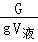
＝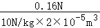
＝0.8×103kg/m3。故答案为：（1）0.16；
（2）0.8×103。
【点评】多种方法测密度是一道综合题，既考查了测量工具的读数，又考查了密度的测量。测量过程以图文并茂的形式呈现，简洁明了，降低了理解难度，适合学生的认知特点。考查了学生分析问题解决问题能力。
36．【分析】要探究电磁波是否能够被屏蔽，首先要知道电磁波的产生和接收，然后将电磁波的接受装置置于电磁屏蔽玻璃箱内，看看电磁波是否能够被接收，据此可选择相应的器材，设计方法进行实验。
【解答】解：
实验器材：两部手机；
实验方法：把一部正常的手机放在电磁屏蔽玻璃箱内，用另一部手机拨打这部手机的号码，听手机是否放出铃声，看手机是否接收到来电信号；
判断方法：如果电磁屏蔽玻璃箱内的手机接收不到信号，说明电磁屏蔽玻璃有屏蔽作用；如果手机接收到信号，说明电磁屏蔽玻璃没有屏蔽作用。
【点评】本题考查了运用实验手段解决问题的能力，能运用所学知识进行有关电磁波的实验设计，手机可以接收电磁波，这是设计实验的关键。
37．【分析】根据液体压强公式P＝ρgh可知，液体内部压强只跟液体的密度和深度有关，密度相同时深度越深压强越大，深度是指自由液面到所在位置的竖直距离，与该点到容器底的距离无关。
【解答】解：实验步骤：
①将微小压强计的探头放入烧杯的水中，用刻度尺分别测量探头到烧杯底的距离L1，探头到水面的距离H，读出压强计U形管两侧的液面高度差h1，将以上数据记录下来。
②向烧杯中倒入适量的水，调整探头所在的位置，使探头到水面的距离仍为H，用刻度尺测量探头到烧杯底部的距离L2，读出压强计U形管两侧的液面高度差h2，将以上数据记录在表格中。
实验现象：通过数据可发现L1≠L2，h1＝h2。
由此证明液体内部任意一点的压强跟该点到容器底的距离L无关，所以小亮的观点是错误的。
【点评】这是一道探究实验题，此题的难点是液体压强计的有关知识，我们要了解压强计的原理，知道液体压强计的操作要求等
38．【分析】（1）使两灯泡串联，电流表分别测量流入第一个灯泡的电流，和流出第二个灯泡的电流，为了得到普遍规律，串联滑动变阻器进行多次实验；
（2）先根据电路图连接实物，然后改变滑片的位置多次实验，并记录电流表的示数；
（3）表格内容包括实验次数、电流表的示数。
【解答】解：（1）从电源正极依次串联电流表A1、灯L1、L2、电流表A2、滑动变阻器以及开关回到电源负极，如下图所示：
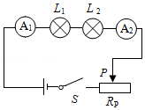
（2）实验步骤：
①按照电路图连接电路。
②闭合开关，调节滑动变阻器滑片P到适当位置，观察电流表A1、A2的示数，分别用IA和IB表示，并将IA和IB的数据记录在表格中。
③改变滑动变阻器滑片P的位置，读出电流表A1、A2的示数IA和IB，并记录在表格中。
④仿照步骤③，再改变四次滑动变阻器滑片P的位置，并将对应的电流表A1、A2的示数IA和IB记在表格中。
（3）实验数据记录表：
【点评】本题以初中电学的基础知识和主干知识“串联电路中的电流规律”为背景素材，考查学生依据实验目的，自选器材、设计实验的能力，以及通过探究归纳得出科学结论的能力。试题内容学生非常熟悉，实验难度不大，但往往在实际设计操作中也会暴露出很多问题，比如没有认真区分自变量和因变量，没有有意识的改变电流大小来重复实验等。本题在教学导向方面也用心良苦，一方面引导我们的教学不能只关注结论，更要关注结论的得出过程；另一方面引导我们教师在教学时面对简单问题也要有意识的进行科学素养的培养，比如，在简单的实验中也要关注自变量、因变量、控制变量的识别，这样更有利于学生在处理复杂问题时也能有效的采用科学探究的程序进行实验设计。
四、科普阅读题（共8分，每小题4分）
39．【分析】（1）认真阅读材料，得出福船采用了什么是技术，然后由此展开想象列举其应用，答案不唯一，合理即可；
（2）根据船的形状判断其计算的排水的体积是否合理，合理的估算方法应该是根据物体漂浮浮力等于重力，而浮力又等于排开水的重力，据此得出等式求解。
【解答】解：（1）根据材料可知，福船采用了水密隔舱技术大大提高了船舶的整体抗沉性。
根据福船的这一技术设计理念，我们可以让潜艇的排水舱使用水密隔舱技术，可提高潜艇的整体抗沉性。
（2）根据材料可知，福船的船身不是长方体，不能使用长方体体积公式计算，可以根据船身及各类物质的总重量估算排水量；
根据材料还可知，帆装、给养、武器、人员、货物等及船自身质量总共可达1170吨。
因为船漂浮，所以F浮＝G船总＝m船总g；根据阿基米德原理可得F浮＝G排＝m排g，
综合两式有m排g＝m物g，所以m排＝m物＝1170t。
故答案为：（1）水密隔舱；潜艇的排水舱可以使用水密隔舱技术（其它答案合理也可）；
（2）福船的船身不是长方体，不能使用长方体体积公式计算，可以根据船身及各类物质的总重量估算排水量。
【点评】本题重点考查学生通过阅读获取信息的方法，并在大量的信息中筛选有价值的信息，带着“问题”进行有目的阅读；考查学生对材料中数据运用的合理性的判断，及对所学知识的运用。
40．【分析】（1）根据“人的眼睛看清物体是通过改变晶状体的形状来实现的，晶状体相当于全自动变焦镜头。看近处物体时，晶状体变凸一些，折射光线的能力变强；看远处物体时，晶状体变扁平一些，折射光线的能力变弱”可得出结论；
（2）根据小京实验结果记录表，结合“当滑块位于标尺上﹣1、﹣2刻度线处时，分别表示从镜片中移出一些液体、移出全部液体”可作出选择；
（3）根据小贝实验结果记录表，结合“当滑块位于标尺上﹣1、﹣2刻度线处时，分别表示从镜片中移出一些液体、移出全部液体”可作出选择。
【解答】解：（1）由“可调式眼镜”的原理可知，可调式镜片，通过眼部肌肉调节晶状体的曲度可以调节，当晶状体的曲度变大，焦距变短，反之亦然；帮助我们看清不同距离的物体；故选C；
（2）由小京的实验结果记录表，可知，小京在远、中、近处看树都“清晰”时，对应的是滑块位于标尺上﹣1，则由可调式眼镜的结构示意图可知，当滑块位于标尺上﹣1时，表示从镜片中移出一些液体，故选C；
（3）由小贝的实验结果记录表，可知，小贝在近处看树“清晰”时，对应的是滑块位于标尺上1、2，则由可调式眼镜的结构示意图可知，当滑块位于标尺上1、2刻度线处时，分别表示镜片中加入一些液体、加满液体，故选AB；
故答案为：（1）C；
（2）C；
（3）AB。
【点评】本题不仅能考查学生阅读科技文献的能力，还能考查学生对科学探究过程的理解。解答本题需要基于证据的科学思维方法，如果仍停留在基于经验或机械记忆去思考解决问题就会出现各类错误，例如第（3）问。科学探究应从问题出发，而不是从结论出发。如果从结论出发，不管是否使用科学方法，也不管方法是否科学，总能得到想要的结论，但这样就无法让学生学到真正的科学方法。
五、计算题（共6分，每小题3分）
41．【分析】由电路图可知，R1与R2串联，电压表测R2两端的电压。
（1）根据串联电路的电压特点求出R1两端的电压，根据串联电路的电流特点和欧姆定律求出电路中的电流，再根据欧姆定律求出电阻R2的阻值；
（2）根据P＝UI求出电阻R1消耗的电功率。
【解答】解：由电路图可知，R1与R2串联，电压表测R2两端的电压。
（1）因串联电路中总电压等于各分电压之和，
所以，R1两端的电压：
U1＝U﹣U2＝12V﹣4V＝8V，
因串联电路中各处的电流相等，
所以，电路中的电流：
I＝
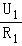
＝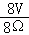
＝1A，则电阻R2的阻值：
R2＝
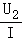
＝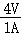
＝4Ω；（2）电阻R1消耗的电功率：
P1＝U1I＝8V×1A＝8W。
答：（1）电阻R2的阻值为4Ω；
（2）电阻R1消耗的电功率为8W。
【点评】本题考查了串联电路的特点和欧姆定律、电功率公式的应用，是一道基础题目。
42．【分析】（1）知道物体的重力和提升的高度，根据W＝Gh求出有用功；
（2）知道拉力的功率和工作时间，根据W＝Pt求出总功，总功减去有用功就是额外功；
（3）根据η＝
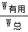
×100%求出使用动滑轮匀速提升物体A的机械效率。【解答】解：
（1）有用功：W有用＝Gh＝800N×10m＝8000J；
（2）由P＝得拉力F做的功：W总＝Pt＝200W×50s＝10000J，
额外功：W额＝W总﹣W有＝10000J﹣8000J＝2000J；
（3）使用动滑轮的机械效率：
η＝×100%＝
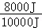
×100%＝80%。答：（1）有用功为8000J；
（2）额外功为2000J；
（3）动滑轮匀速提升建筑材料A的机械效率为80%。
【点评】本题考查了做功公式和功率公式、机械效率公式的应用，是一道较为常见的应用题。
声明：试题解析著作权属菁优网所有，未经书面同意，不得复制发布
日期：2022/3/14 13:38:46；用户：18032927792；邮箱：18032927792；学号：39962732